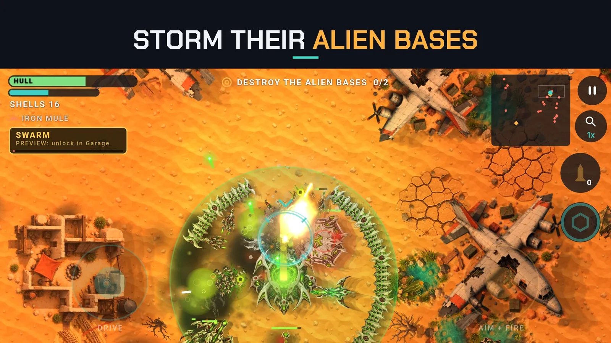

An offline tank game: what works without internet
Tankageddon is built to be played anywhere: on a train, on a plane, in a room with no signal. This page says plainly what works offline and what does not.
What works with no connection
The whole campaign plays without internet. That means all 99 levels in all 10 worlds, every boss fight, every mission and every upgrade. There is no sign-up and no account. You can start the game in airplane mode and play it from the first level to the Hive.
Your progress is saved on your device: your levels, scrap, upgrades and settings. You can save and quit at any time and continue exactly where you left off. You also keep all the game options offline, including the 4 difficulty levels from relaxed to brutal, the control layouts and the zoom levels.
What needs a connection
Ads and purchases need a connection, the game does not. In detail:
- The free version shows a small banner ad. An ad can only be shown when the device is online.
- You get 3 lives per map. A short ad can give you 3 more, and that ad needs a connection. Without one, you can still restart the map.
- Tankageddon Premium is a one-time purchase that removes ads, gives 99 lives per map, 10 upgrade points and 10 extra sound packs. It is sold through Google Play, so buying it needs a connection.
- Optional scrap packs, which speed up upgrades, are purchases too. There are no loot boxes.
Why an offline tank game
Tankageddon for Android is a top-down tank shooter about the last tank on Earth. Drive with one thumb, aim and fire with the other, storm alien bases, escort supply trucks and beat a boss at the end of every level. None of that needs a server, so nothing in the campaign depends on how good your signal is.
That is also why the game asks for no account. There is no sign-in to remember. It is one tank against the invasion, and the progress belongs to the device it is saved on.
Good to know
Because progress is saved on the device, Tankageddon has no account that could carry it to a new phone. Plan for that if you change devices. The game runs on Android phones, foldables and tablets with Android 7.0 or newer, in landscape. If you want to know how the game plays, read about the controls, bosses and upgrades. If you prefer a pad to the touch sticks, see gamepad support.


Questions
Can I play Tankageddon without WiFi or mobile data?
Yes. The whole campaign of 99 levels plays without internet and without an account.
What needs an internet connection?
Ads and purchases need a connection, the game does not. A short ad that gives you 3 more lives, the banner ad and buying Tankageddon Premium all need one.
Is my progress saved when I am offline?
Yes. Progress is saved on your device, and you can save and quit at any time and continue exactly where you left off.